CODING AGENTS AS PIXEL WORLD MODELS
traex/DeepSeek-V4.1-Flash · phygen_114
点击播放 · 原生 RGB 像素
逐轮保存的候选
回放视频、检查图与代码变化。
每份候选均可单独播放。实际图片检查记录在下方工具轨迹中。
候选 01播放与检查图
点击播放 · 原生 RGB 像素
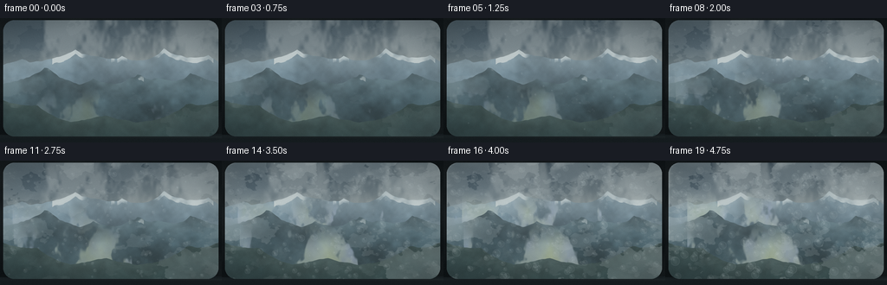
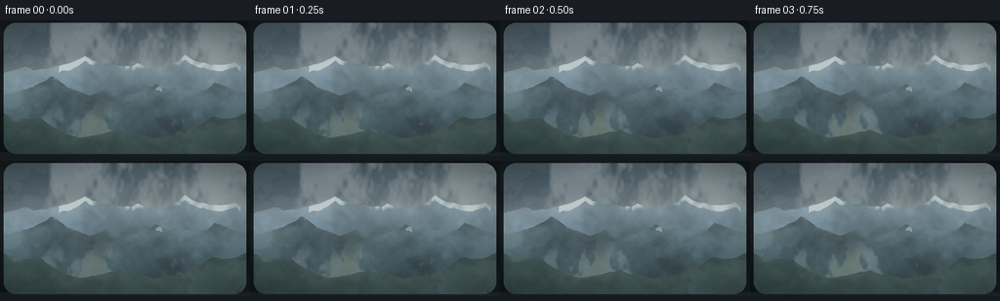
展开代码变化
--- 上一保存版本
+++ 本次保存版本
@@ -0,0 +1,439 @@
+from pathlib import Path
+
+import numpy as np
+from PIL import Image, ImageDraw, ImageFilter
+
+import artifact_io
+
+
+ROOT = Path(__file__).resolve().parent
+WIDTH, HEIGHT, FRAMES, FPS = 256, 144, 20, 4.0
+SS = 3
+W, H = WIDTH * SS, HEIGHT * SS
+
+
+def smoothstep(edge0, edge1, value):
+ x = np.clip((value - edge0) / (edge1 - edge0), 0.0, 1.0)
+ return x * x * (3.0 - 2.0 * x)
+
+
+def resize_field(field, size):
+ image = Image.fromarray(np.asarray(field, dtype=np.float32))
+ return np.asarray(image.resize(size, Image.Resampling.BICUBIC), dtype=np.float32)
+
+
+def fbm(width, height, seed, octaves=5, base=3.0, persistence=0.56, stretch=(1.0, 1.0)):
+ rng = np.random.default_rng(seed)
+ total = np.zeros((height, width), dtype=np.float32)
+ weight_sum = 0.0
+ weight = 1.0
+ for octave in range(octaves):
+ cells = 2 ** octave
+ grid_w = max(3, int(base * cells * stretch[0]))
+ grid_h = max(3, int(base * cells * stretch[1]))
+ grid = rng.normal(0.0, 1.0, (grid_h, grid_w)).astype(np.float32)
+ layer = resize_field(grid, (width, height))
+ total += layer * weight
+ weight_sum += weight
+ weight *= persistence
+ total /= weight_sum
+ total -= float(total.mean())
+ total /= max(float(total.std()), 1e-5)
+ return total
+
+
+def noise_1d(length, seed, base=5, octaves=4, persistence=0.55):
+ rng = np.random.default_rng(seed)
+ result = np.zeros(length, dtype=np.float32)
+ total_weight = 0.0
+ weight = 1.0
+ for octave in range(octaves):
+ count = max(4, int(base * 2 ** octave))
+ points = rng.normal(0.0, 1.0, (1, count)).astype(np.float32)
+ curve = resize_field(points, (length, 1))[0]
+ result += curve * weight
+ total_weight += weight
+ weight *= persistence
+ result /= total_weight
+ result -= result.mean()
+ result /= max(result.std(), 1e-5)
+ return result
+
+
+def ridge_curve(base, peaks, seed, roughness=0.025):
+ x = np.linspace(0.0, 1.0, W, dtype=np.float32)
+ y = np.full_like(x, base)
+ for center, height, half_width, power in peaks:
+ profile = np.maximum(0.0, 1.0 - np.abs((x - center) / half_width))
+ y -= height * profile ** power
+ y += noise_1d(W, seed, base=5, octaves=5, persistence=0.56) * roughness
+ return np.clip(y, 0.055, 0.94)
+
+
+def color_ramp(stops, value):
+ positions = np.asarray([item[0] for item in stops], dtype=np.float32)
+ colors = np.asarray([item[1] for item in stops], dtype=np.float32)
+ value = np.clip(value, 0.0, 1.0)
+ channels = [np.interp(value, positions, colors[:, channel]) for channel in range(3)]
+ return np.stack(channels, axis=-1)
+
+
+def blend(base, color, alpha):
+ alpha = np.asarray(alpha, dtype=np.float32)
+ if alpha.ndim == 2:
+ alpha = alpha[..., None]
+ color = np.asarray(color, dtype=np.float32)
+ if color.ndim == 2:
+ color = color[..., None]
+ return base * (1.0 - alpha) + color * alpha
+
+
+def build_sky(t, yy, xx):
+ sky_stops = [
+ (0.00, (47, 62, 73)),
+ (0.24, (75, 91, 101)),
+ (0.48, (134, 145, 146)),
+ (0.66, (177, 185, 181)),
+ (1.00, (156, 169, 168)),
+ ]
+ vertical = np.repeat(yy[:, 0:1], W, axis=1)
+ sky = color_ramp(sky_stops, vertical).astype(np.float32)
+
+ cloud = fbm(W // 2, H // 2, 712, octaves=5, base=3.2, persistence=0.61, stretch=(1.7, 0.62))
+ cloud = np.roll(cloud, int(9 * t), axis=1)
+ cloud = resize_field(cloud, (W, H))
+ wisps = fbm(W // 2, H // 2, 911, octaves=4, base=5.0, persistence=0.57, stretch=(2.2, 0.5))
+ wisps = np.roll(wisps, int(-15 * t), axis=1)
+ wisps = resize_field(wisps, (W, H))
+ cloud_alpha = smoothstep(-0.15, 1.15, cloud + 0.28 * wisps)
+ cloud_alpha *= (1.0 - smoothstep(0.52, 0.69, yy)) * 0.38
+ sky = blend(sky, (195, 201, 199), cloud_alpha)
+
+ glow = np.exp(-(((xx - 0.72) / 0.23) ** 2 + ((yy - 0.35) / 0.24) ** 2))
+ sky = blend(sky, (220, 216, 202), glow * 0.16)
+ return sky
+
+
+def build_mountain(img, yy, curve, texture, colors, snowline, snow_amount, seed):
+ top = curve[None, :]
+ mask = np.clip((yy - top) * H * 0.85 + 0.5, 0.0, 1.0)
+ depth = np.maximum(yy - top, 0.0)
+ vertical = np.clip(depth / 0.48, 0.0, 1.0)
+ mountain = color_ramp(colors, vertical).astype(np.float32)
+
+ crag = resize_field(
+ fbm(W // 3, H // 3, seed, octaves=5, base=3.3, persistence=0.61, stretch=(1.6, 1.0)),
+ (W, H),
+ )
+ slope = np.gradient(curve)
+ slope_field = np.broadcast_to(np.clip(0.45 - slope * 10.0, 0.0, 0.8)[None, :], (H, W))
+ shade = np.clip(1.0 + 0.13 * crag + 0.10 * (slope_field - 0.4), 0.72, 1.22)
+ mountain *= shade[..., None]
+
+ snow_zone = (depth < (0.008 + 0.033 * (0.5 + 0.5 * crag)))
+ summit = curve < snowline
+ snow_texture = smoothstep(-0.15, 1.15, crag + 0.20 * texture)
+ snow = snow_zone * summit[None, :] * snow_texture * snow_amount
+ mountain = blend(mountain, (211, 218, 217), snow)
+ return blend(img, mountain, mask * 0.985)
+
+
+def fog_density(t, yy, xx):
+ frame_shift = int(t * 38)
+ n1 = fbm(W // 2, H // 2, 1511, octaves=5, base=3.2, persistence=0.60, stretch=(1.9, 0.72))
+ n1 = np.roll(n1, frame_shift, axis=1)
+ n1 = resize_field(n1, (W, H))
+ n2 = fbm(W // 2, H // 2, 1723, octaves=4, base=4.8, persistence=0.58, stretch=(2.5, 0.60))
+ n2 = np.roll(n2, -int(t * 54), axis=1)
+ n2 = resize_field(n2, (W, H))
+
+ reach = 0.61 - 0.28 * smoothstep(0.0, 1.0, t)
+ vertical = smoothstep(reach - 0.12, reach + 0.11, yy)
+ vertical *= 1.0 - smoothstep(0.96, 1.10, yy)
+ horizontal = 0.77 + 0.23 * smoothstep(0.05, 0.95, xx)
+ noise = 0.64 * n1 + 0.36 * n2
+ threshold = 0.36 - 0.22 * t
+ density = smoothstep(threshold, threshold + 0.40, noise)
+ density *= vertical * horizontal
+ density *= 0.30 + 0.53 * smoothstep(0.0, 1.0, t)
+ return np.clip(density, 0.0, 0.82), n1, n2
+
+
+def make_drop_sprite(radius):
+ size = radius * 2 + 5
+ yy, xx = np.mgrid[-size:size + 1, -size:size + 1].astype(np.float32)
+ rr = np.sqrt(xx * xx + yy * yy) / max(radius, 1.0)
+ inside = rr <= 1.0
+ rim = smoothstep(0.68, 1.0, rr) * inside
+ center = (1.0 - smoothstep(0.0, 0.85, rr)) * inside
+ highlight = np.exp(-(((xx + radius * 0.34) / (radius * 0.28)) ** 2 +
+ ((yy + radius * 0.36) / (radius * 0.25)) ** 2))
+ lower_glow = np.exp(-(((xx - radius * 0.18) / (radius * 0.42)) ** 2 +
+ ((yy - radius * 0.48) / (radius * 0.26)) ** 2))
+
+ rgba = np.zeros((yy.shape[0], yy.shape[1], 4), dtype=np.float32)
+ rgba[..., 0] = 190.0 + 34.0 * highlight
+ rgba[..., 1] = 203.0 + 30.0 * highlight
+ rgba[..., 2] = 205.0 + 27.0 * highlight
+ alpha = inside * (0.055 + 0.105 * center + 0.13 * rim + 0.22 * highlight + 0.06 * lower_glow)
+ rgba[..., 3] = np.clip(alpha, 0.0, 0.48)
+ return rgba
+
+
+def composite_sprite(layer, sprite, center_x, center_y, opacity):
+ half_y = sprite.shape[0] // 2
+ half_x = sprite.shape[1] // 2
+ x0, x1 = center_x - half_x, center_x + half_x + 1
+ y0, y1 = center_y - half_y, center_y + half_y + 1
+ sx0, sy0 = 0, 0
+ sx1, sy1 = sprite.shape[1], sprite.shape[0]
+ if x0 < 0:
+ sx0 -= x0
+ x0 = 0
+ if y0 < 0:
+ sy0 -= y0
+ y0 = 0
+ if x1 > W:
+ sx1 -= x1 - W
+ x1 = W
+ if y1 > H:
+ sy1 -= y1 - H
+ y1 = H
+ if x1 <= x0 or y1 <= y0:
+ return
+
+ src = sprite[sy0:sy1, sx0:sx1]
+ dst = layer[y0:y1, x0:x1]
+ src_alpha = src[..., 3:4] * opacity
+ dst_alpha = dst[..., 3:4]
+ out_alpha = src_alpha + dst_alpha * (1.0 - src_alpha)
+ out_rgb = (src[..., :3] * src_alpha + dst[..., :3] * dst_alpha * (1.0 - src_alpha))
+ out_rgb = out_rgb / np.maximum(out_alpha, 1e-5)
+ dst[..., :3] = out_rgb
+ dst[..., 3:4] = out_alpha
+
+
+def droplet_layer(t):
+ rng = np.random.default_rng(44021)
+ layer = np.zeros((H, W, 4), dtype=np.float32)
+ count = 245
+ sprites = {radius: make_drop_sprite(radius) for radius in range(3, 17)}
+ for _ in range(count):
+ x = int(rng.uniform(0.035, 0.965) * W)
+ y = int(rng.uniform(0.055, 0.975) * H)
+ birth = float(rng.uniform(0.08, 0.92))
+ if t <= birth:
+ continue
+ age = (t - birth) / max(1.0 - birth, 0.05)
+ appear = smoothstep(0.0, 0.18, age)
+ max_radius = int(rng.integers(5, 17))
+ radius = int(round(3 + (max_radius - 3) * smoothstep(0.0, 1.0, age)))
+ speed = rng.uniform(0.0, 5.5)
+ y += int(speed * age * age * SS)
+ x += int(np.sin(age * 8.0 + birth * 31.0) * 0.7 * SS)
+ composite_sprite(layer, sprites[radius], x, y, 0.70 * appear)
+ return layer
+
+
+def glass_condensation(img, t, yy, xx):
+ strength = smoothstep(0.08, 1.0, t)
+ distance_x = np.minimum(xx, 1.0 - xx)
+ distance_y = np.minimum(yy, 1.0 - yy)
+ edge = np.maximum(
+ np.exp(-distance_x / 0.115),
+ np.exp(-distance_y / 0.095),
+ )
+ edge = np.maximum(edge, 0.62 * np.exp(-(1.0 - yy) / 0.14))
+
+ mist_noise = resize_field(
+ fbm(W // 2, H // 2, 3137, octaves=6, base=3.3, persistence=0.61, stretch=(1.25, 1.0)),
+ (W, H),
+ ).copy()
+ mist_noise += 0.22 * resize_field(
+ fbm(W // 2, H // 2, 3203, octaves=5, base=5.0, persistence=0.57, stretch=(2.0, 1.0)),
+ (W, H),
+ )
+ threshold = 0.70 - 0.47 * strength - 0.22 * edge * strength
+ mist = smoothstep(threshold, threshold + 0.15, mist_noise)
+ mist *= (0.18 + 0.60 * strength) * (0.36 + 0.64 * edge)
+ mist = np.clip(mist, 0.0, 0.78)
+
+ blur_radius = 1.0 + 7.0 * strength
+ blurred = np.asarray(
+ Image.fromarray(np.clip(img, 0, 255).astype(np.uint8)).filter(
+ ImageFilter.GaussianBlur(blur_radius)
+ ),
+ dtype=np.float32,
+ )
+ img = blend(img, blurred, mist * 0.90)
+
+ fog_color = np.empty_like(img)
+ fog_color[..., 0] = 198 + 10 * mist_noise
+ fog_color[..., 1] = 208 + 9 * mist_noise
+ fog_color[..., 2] = 209 + 8 * mist_noise
+ img = blend(img, fog_color, mist * 0.46)
+
+ fine = fbm(W // 2, H // 2, 3701, octaves=6, base=13.0, persistence=0.60, stretch=(1.0, 1.0))
+ fine = resize_field(fine, (W, H))
+ frost = smoothstep(0.48, 1.20, fine) * edge * strength * 0.17
+ img = blend(img, (224, 230, 228), frost)
+
+ drops = droplet_layer(t)
+ drop_rgb = drops[..., :3]
+ drop_alpha = drops[..., 3]
+ img = img * (1.0 - drop_alpha[..., None]) + drop_rgb * drop_alpha[..., None]
+ return img
+
+
+def windshield_frame(img):
+ opening_mask = Image.new("L", (W, H), 0)
+ draw = ImageDraw.Draw(opening_mask)
+ draw.rounded_rectangle((11, 7, W - 12, H - 22), radius=38, fill=255)
+ mask = np.asarray(opening_mask, dtype=np.float32)[..., None] / 255.0
+
+ yy, xx = np.mgrid[0:H, 0:W].astype(np.float32)
+ yy /= H - 1
+ xx /= W - 1
+
+ frame_texture = resize_field(
+ fbm(W // 3, H // 3, 5011, octaves=4, base=4.0, persistence=0.55),
+ (W, H),
+ )
+ frame_rgb = np.empty((H, W, 3), dtype=np.float32)
+ frame_rgb[..., 0] = 13 + 3 * frame_texture
+ frame_rgb[..., 1] = 17 + 3 * frame_texture
+ frame_rgb[..., 2] = 19 + 3 * frame_texture
+
+ dashboard_curve = H - 27 + 5 * np.sin(xx[0] * np.pi * 1.2)
+ dash_mask = smoothstep(dashboard_curve[None, :] - 0.8, dashboard_curve[None, :] + 1.2, yy * H)
+ dash_color = np.empty_like(frame_rgb)
+ dash_color[..., 0] = 17 + 4 * (1.0 - yy)
+ dash_color[..., 1] = 23 + 5 * (1.0 - yy)
+ dash_color[..., 2] = 26 + 6 * (1.0 - yy)
+ frame_rgb = blend(frame_rgb, dash_color, dash_mask)
+
+ glass = img * mask
+ out = frame_rgb * (1.0 - mask) + glass
+
+ inner_edge = (smoothstep(0.0, 2.0, mask[..., 0]) - smoothstep(2.0, 4.0, mask[..., 0]))
+ inner_edge *= (1.0 - smoothstep(0.0, 2.0, mask[..., 0]))
+ edge_glow = smoothstep(0.72, 1.0, np.maximum(np.abs(xx - 0.5) * 2.0, np.abs(yy - 0.5) * 2.0))
+ out = blend(out, (56, 68, 70), edge_glow * 0.10)
+ out = blend(out, (105, 120, 121), inner_edge * 0.28)
+
+ dash_glint = np.exp(-((yy - 0.956) / 0.010) ** 2) * (0.35 + 0.65 * smoothstep(0.0, 0.9, xx))
+ out = blend(out, (69, 79, 78), dash_glint * 0.14)
+ return out
+
+
+def render_frame(frame_index):
+ t = frame_index / (FRAMES - 1)
+ yy, xx = np.mgrid[0:H, 0:W].astype(np.float32)
+ yy /= H - 1
+ xx /= W - 1
+
+ img = build_sky(t, yy, xx)
+ texture = resize_field(
+ fbm(W // 2, H // 2, 1109, octaves=5, base=4.0, persistence=0.58, stretch=(1.4, 1.0)),
+ (W, H),
+ )
+
+ far_curve = ridge_curve(
+ 0.455,
+ [(0.10, 0.12, 0.23, 1.30), (0.34, 0.19, 0.22, 1.35),
+ (0.55, 0.14, 0.17, 1.50), (0.74, 0.23, 0.22, 1.25),
+ (0.94, 0.15, 0.17, 1.40)],
+ 9001,
+ roughness=0.019,
+ )
+ img = build_mountain(
+ img, yy, far_curve, texture,
+ [(0.00, (118, 136, 145)), (0.30, (101, 121, 132)), (1.00, (75, 96, 108))],
+ snowline=0.325, snow_amount=0.82, seed=1211,
+ )
+
+ density, fog_n1, fog_n2 = fog_density(t, yy, xx)
+ fog_color = np.empty_like(img)
+ fog_color[..., 0] = 186 + 16 * fog_n1
+ fog_color[..., 1] = 198 + 15 * fog_n1
+ fog_color[..., 2] = 199 + 13 * fog_n2
+ img = blend(img, fog_color, density * 0.72)
+
+ mid_curve = ridge_curve(
+ 0.605,
+ [(0.02, 0.09, 0.22, 1.45), (0.20, 0.17, 0.21, 1.35),
+ (0.42, 0.11, 0.16, 1.55), (0.62, 0.19, 0.21, 1.30),
+ (0.86, 0.15, 0.22, 1.35)],
+ 9103,
+ roughness=0.022,
+ )
+ img = build_mountain(
+ img, yy, mid_curve, texture,
+ [(0.00, (83, 102, 109)), (0.34, (64, 84, 92)), (1.00, (43, 62, 68))],
+ snowline=0.475, snow_amount=0.58, seed=1319,
+ )
+
+ density2, fog2a, fog2b = fog_density(min(1.0, t * 1.08 + 0.02), yy, xx)
+ lower_fog = density2 * smoothstep(0.46, 0.73, yy)
+ fog2_color = np.empty_like(img)
+ fog2_color[..., 0] = 181 + 17 * fog2a
+ fog2_color[..., 1] = 194 + 15 * fog2a
+ fog2_color[..., 2] = 195 + 12 * fog2b
+ img = blend(img, fog2_color, lower_fog * 0.76)
+
+ near_curve = ridge_curve(
+ 0.845,
+ [(0.00, 0.17, 0.25, 1.55), (0.17, 0.10, 0.21, 1.60),
+ (0.48, 0.04, 0.17, 1.75), (0.84, 0.16, 0.23, 1.45),
+ (0.99, 0.18, 0.19, 1.45)],
+ 9209,
+ roughness=0.018,
+ )
+ img = build_mountain(
+ img, yy, near_curve, texture,
+ [(0.00, (55, 73, 72)), (0.32, (38, 56, 57)), (1.00, (22, 36, 38))],
+ snowline=0.70, snow_amount=0.12, seed=1427,
+ )
+
+ valley_mist = np.exp(-((yy - 0.735) / 0.105) ** 2)
+ valley_mist *= smoothstep(-0.4, 1.4, fog_n1 + 0.22 * fog_n2)
+ valley_mist *= 0.12 + 0.33 * t
+ img = blend(img, (164, 181, 183), valley_mist * 0.35)
+
+ # A restrained reflection from the dashboard on the inside of the glass.
+ reflection = np.exp(-((yy - 0.83) / 0.115) ** 2) * np.exp(-((xx - 0.42) / 0.48) ** 2)
+ reflection *= 0.055 + 0.035 * smoothstep(0.1, 0.8, t)
+ img = blend(img, (90, 103, 101), reflection)
+
+ img = glass_condensation(img, t, yy, xx)
+
+ # Glass tint and gentle optical vignette.
+ img = blend(img, (173, 193, 193), 0.045)
+ radial = np.sqrt(((xx - 0.5) / 0.72) ** 2 + ((yy - 0.52) / 0.74) ** 2)
+ vignette = smoothstep(0.58, 1.08, radial) * 0.24
+ img = blend(img, (7, 14, 17), vignette)
+
+ img = windshield_frame(img)
+
+ # Fine, deterministic sensor grain keeps the gradients from looking synthetic.
+ rng = np.random.default_rng(8100 + frame_index)
+ grain = rng.normal(0.0, 1.0, (H, W, 1)).astype(np.float32)
+ grain = np.repeat(grain, 3, axis=2) * 1.55
+ img = np.clip(img + grain, 0, 255)
+
+ final = np.asarray(
+ Image.fromarray(img.astype(np.uint8)).resize((WIDTH, HEIGHT), Image.Resampling.LANCZOS),
+ dtype=np.uint8,
+ )
+ return final
+
+
+def main():
+ frames = np.stack([render_frame(index) for index in range(FRAMES)], axis=0)
+ assert frames.shape == (FRAMES, HEIGHT, WIDTH, 3)
+ artifact_io.save(frames, ROOT)
+ print(f"wrote {FRAMES} frames to {ROOT}")
+
+
+if __name__ == "__main__":
+ main()
候选 02播放与检查图
点击播放 · 原生 RGB 像素

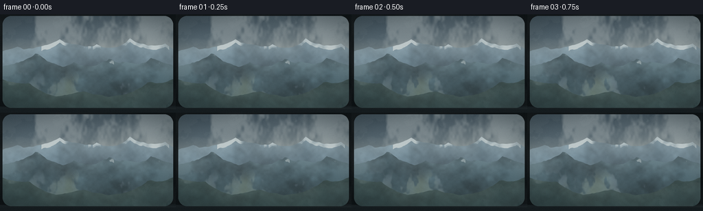
展开代码变化
--- 上一保存版本
+++ 本次保存版本
@@ -155,7 +155,7 @@
threshold = 0.36 - 0.22 * t
density = smoothstep(threshold, threshold + 0.40, noise)
density *= vertical * horizontal
- density *= 0.30 + 0.53 * smoothstep(0.0, 1.0, t)
+ density *= 0.27 + 0.47 * smoothstep(0.0, 1.0, t)
return np.clip(density, 0.0, 0.82), n1, n2
@@ -164,19 +164,19 @@
yy, xx = np.mgrid[-size:size + 1, -size:size + 1].astype(np.float32)
rr = np.sqrt(xx * xx + yy * yy) / max(radius, 1.0)
inside = rr <= 1.0
- rim = smoothstep(0.68, 1.0, rr) * inside
- center = (1.0 - smoothstep(0.0, 0.85, rr)) * inside
- highlight = np.exp(-(((xx + radius * 0.34) / (radius * 0.28)) ** 2 +
- ((yy + radius * 0.36) / (radius * 0.25)) ** 2))
- lower_glow = np.exp(-(((xx - radius * 0.18) / (radius * 0.42)) ** 2 +
- ((yy - radius * 0.48) / (radius * 0.26)) ** 2))
+ rim = smoothstep(0.60, 1.0, rr) * inside
+ center = (1.0 - smoothstep(0.0, 0.90, rr)) * inside
+ highlight = np.exp(-(((xx + radius * 0.31) / (radius * 0.19)) ** 2 +
+ ((yy + radius * 0.34) / (radius * 0.17)) ** 2))
+ lower_glow = np.exp(-(((xx - radius * 0.18) / (radius * 0.44)) ** 2 +
+ ((yy - radius * 0.48) / (radius * 0.22)) ** 2))
rgba = np.zeros((yy.shape[0], yy.shape[1], 4), dtype=np.float32)
- rgba[..., 0] = 190.0 + 34.0 * highlight
- rgba[..., 1] = 203.0 + 30.0 * highlight
- rgba[..., 2] = 205.0 + 27.0 * highlight
- alpha = inside * (0.055 + 0.105 * center + 0.13 * rim + 0.22 * highlight + 0.06 * lower_glow)
- rgba[..., 3] = np.clip(alpha, 0.0, 0.48)
+ rgba[..., 0] = 83.0 + 146.0 * highlight + 95.0 * lower_glow
+ rgba[..., 1] = 100.0 + 136.0 * highlight + 100.0 * lower_glow
+ rgba[..., 2] = 104.0 + 126.0 * highlight + 95.0 * lower_glow
+ alpha = inside * (0.018 + 0.022 * center + 0.16 * rim + 0.24 * highlight + 0.045 * lower_glow)
+ rgba[..., 3] = np.clip(alpha, 0.0, 0.36)
return rgba
@@ -216,8 +216,12 @@
def droplet_layer(t):
rng = np.random.default_rng(44021)
layer = np.zeros((H, W, 4), dtype=np.float32)
- count = 245
- sprites = {radius: make_drop_sprite(radius) for radius in range(3, 17)}
+ streak_mask = Image.new("L", (W, H), 0)
+ streak_glint = Image.new("L", (W, H), 0)
+ streak_draw = ImageDraw.Draw(streak_mask)
+ glint_draw = ImageDraw.Draw(streak_glint)
+ count = 185
+ sprites = {radius: make_drop_sprite(radius) for radius in range(2, 13)}
for _ in range(count):
x = int(rng.uniform(0.035, 0.965) * W)
y = int(rng.uniform(0.055, 0.975) * H)
@@ -226,13 +230,20 @@
continue
age = (t - birth) / max(1.0 - birth, 0.05)
appear = smoothstep(0.0, 0.18, age)
- max_radius = int(rng.integers(5, 17))
- radius = int(round(3 + (max_radius - 3) * smoothstep(0.0, 1.0, age)))
- speed = rng.uniform(0.0, 5.5)
+ max_radius = int(rng.integers(4, 13))
+ radius = int(round(2 + (max_radius - 2) * smoothstep(0.0, 1.0, age)))
+ speed = rng.uniform(0.0, 4.8)
y += int(speed * age * age * SS)
x += int(np.sin(age * 8.0 + birth * 31.0) * 0.7 * SS)
- composite_sprite(layer, sprites[radius], x, y, 0.70 * appear)
- return layer
+ if speed > 2.5 and age > 0.16:
+ trail = min(int(speed * age * age * SS * 1.7), int(0.07 * H))
+ width = max(1, radius // 3)
+ streak_draw.line((x, y - trail, x, y), fill=int(110 * appear), width=width)
+ glint_draw.line((x - width, y - trail, x - width, y), fill=int(80 * appear), width=1)
+ composite_sprite(layer, sprites[radius], x, y, 0.82 * appear)
+ streak_mask = streak_mask.filter(ImageFilter.GaussianBlur(0.9))
+ streak_glint = streak_glint.filter(ImageFilter.GaussianBlur(0.65))
+ return layer, streak_mask, streak_glint
def glass_condensation(img, t, yy, xx):
@@ -253,32 +264,36 @@
fbm(W // 2, H // 2, 3203, octaves=5, base=5.0, persistence=0.57, stretch=(2.0, 1.0)),
(W, H),
)
- threshold = 0.70 - 0.47 * strength - 0.22 * edge * strength
- mist = smoothstep(threshold, threshold + 0.15, mist_noise)
- mist *= (0.18 + 0.60 * strength) * (0.36 + 0.64 * edge)
- mist = np.clip(mist, 0.0, 0.78)
-
- blur_radius = 1.0 + 7.0 * strength
+ threshold = 0.72 - 0.42 * strength - 0.19 * edge * strength
+ mist = smoothstep(threshold, threshold + 0.17, mist_noise)
+ mist *= (0.16 + 0.51 * strength) * (0.34 + 0.66 * edge)
+ mist = np.clip(mist, 0.0, 0.70)
+
+ blur_radius = 0.8 + 5.2 * strength
blurred = np.asarray(
Image.fromarray(np.clip(img, 0, 255).astype(np.uint8)).filter(
ImageFilter.GaussianBlur(blur_radius)
),
dtype=np.float32,
)
- img = blend(img, blurred, mist * 0.90)
+ img = blend(img, blurred, mist * 0.84)
fog_color = np.empty_like(img)
fog_color[..., 0] = 198 + 10 * mist_noise
fog_color[..., 1] = 208 + 9 * mist_noise
fog_color[..., 2] = 209 + 8 * mist_noise
- img = blend(img, fog_color, mist * 0.46)
+ img = blend(img, fog_color, mist * 0.32)
fine = fbm(W // 2, H // 2, 3701, octaves=6, base=13.0, persistence=0.60, stretch=(1.0, 1.0))
fine = resize_field(fine, (W, H))
frost = smoothstep(0.48, 1.20, fine) * edge * strength * 0.17
img = blend(img, (224, 230, 228), frost)
- drops = droplet_layer(t)
+ drops, streak_mask, streak_glint = droplet_layer(t)
+ streak_alpha = np.asarray(streak_mask, dtype=np.float32)[..., None] / 255.0
+ glint_alpha = np.asarray(streak_glint, dtype=np.float32)[..., None] / 255.0
+ img = img * (1.0 - streak_alpha * 0.035) + np.asarray((113, 132, 134), dtype=np.float32) * streak_alpha * 0.035
+ img = img * (1.0 - glint_alpha * 0.075) + np.asarray((226, 232, 230), dtype=np.float32) * glint_alpha * 0.075
drop_rgb = drops[..., :3]
drop_alpha = drops[..., 3]
img = img * (1.0 - drop_alpha[..., None]) + drop_rgb * drop_alpha[..., None]
候选 03播放与检查图
点击播放 · 原生 RGB 像素
展开代码变化
--- 上一保存版本
+++ 本次保存版本
@@ -286,8 +286,28 @@
fine = fbm(W // 2, H // 2, 3701, octaves=6, base=13.0, persistence=0.60, stretch=(1.0, 1.0))
fine = resize_field(fine, (W, H))
- frost = smoothstep(0.48, 1.20, fine) * edge * strength * 0.17
- img = blend(img, (224, 230, 228), frost)
+ frost = smoothstep(0.62, 1.25, fine) * edge * strength * 0.10
+ img = blend(img, (211, 221, 220), frost)
+
+ # Broad, soft wipes reveal cleaner glass against the surrounding condensation.
+ wipe_paths = [(0.04, 0.31, 0.58, 0.29, 0.10), (0.46, 0.18, 0.91, 0.37, 0.08),
+ (0.02, 0.59, 0.31, 0.52, 0.07), (0.73, 0.64, 0.99, 0.48, 0.06)]
+ wipe_mask = np.zeros((H, W), dtype=np.float32)
+ for x0, y0, x1, y1, width in wipe_paths:
+ vx, vy = x1 - x0, y1 - y0
+ length2 = vx * vx + vy * vy
+ along = np.clip(((xx - x0) * vx + (yy - y0) * vy) / length2, 0.0, 1.0)
+ px = x0 + along * vx
+ py = y0 + along * vy
+ distance = np.sqrt((xx - px) ** 2 + (yy - py) ** 2)
+ taper = np.sin(np.pi * along) ** 0.55
+ wipe_mask = np.maximum(wipe_mask, np.exp(-(distance / width) ** 4) * taper)
+ wipe_mask *= smoothstep(0.22, 0.72, t)
+ img = img * (1.0 + wipe_mask[..., None] * 0.16)
+ img += wipe_mask[..., None] * np.asarray((5, 6, 5), dtype=np.float32)
+
+ cold_edge = edge * smoothstep(0.08, 0.95, t)
+ img = blend(img, (181, 202, 205), cold_edge * 0.055)
drops, streak_mask, streak_glint = droplet_layer(t)
streak_alpha = np.asarray(streak_mask, dtype=np.float32)[..., None] / 255.0
候选 04播放与检查图
候选 05播放与检查图
点击播放 · 原生 RGB 像素
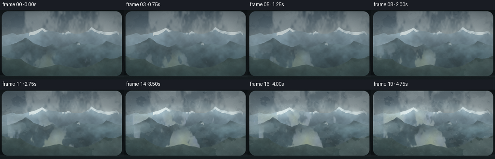
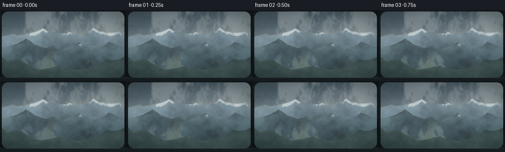
展开代码变化
--- 上一保存版本
+++ 本次保存版本
@@ -300,7 +300,7 @@
px = x0 + along * vx
py = y0 + along * vy
distance = np.sqrt((xx - px) ** 2 + (yy - py) ** 2)
- taper = np.sin(np.pi * along) ** 0.55
+ taper = np.clip(np.sin(np.pi * along), 0.0, 1.0) ** 0.55
wipe_mask = np.maximum(wipe_mask, np.exp(-(distance / width) ** 4) * taper)
wipe_mask *= smoothstep(0.22, 0.72, t)
img = img * (1.0 + wipe_mask[..., None] * 0.16)
可观测工具轨迹
实际执行的命令与返回图片。
命令 1exit 0
/bin/bash -c "pwd && rg --files -g 'prompt.txt' -g 'GENERATION_RULES.md' -g 'task_spec.json' -g '"'!**/.git/**'"'"
命令 2exit 0
/bin/bash -c "find . -maxdepth 2 -type f -not -path './.git/*' -printf '%p\\n' | sort | head -200"
命令 3exit 0
/bin/bash -c 'cat prompt.txt'
命令 4exit 0
/bin/bash -c 'cat GENERATION_RULES.md'
命令 5exit 0
/bin/bash -c 'cat task_spec.json'
命令 6exit 0
/bin/bash -c "sed -n '1,240p' artifact_io.py"
命令 7exit 0
/bin/bash -c "sed -n '1,240p' player_template.html"
命令 8exit 0
/bin/bash -c "python - <<'PY'
import numpy, PIL
print('numpy', numpy.__version__)
print('PIL', PIL.__version__)
PY"命令 9exit 1
/bin/bash -c 'python generate.py'
命令 10exit 0
/bin/bash -c 'python generate.py'
命令 11exit 0
/bin/bash -c 'python generate.py'
命令 12exit 0
/bin/bash -c 'python generate.py'
命令 13exit 0
/bin/bash -c 'python generate.py'
命令 14exit 0
/bin/bash -c "python - <<'PY'
from pathlib import Path
import numpy as np
from PIL import Image
root=Path('.')
files=sorted((root/'frames').glob('*.png'))
arr=np.stack([np.asarray(Image.open(p).convert('RGB'),dtype=np.int16) for p in files])
diff=np.abs(np.diff(arr,axis=0)).mean(axis=(1,2,3))
print('frames',len(files),'shape',arr.shape)
print('diff mean/min/max',float(diff.mean()),float(diff.min()),float(diff.max()))
print('diff series',np.round(diff,2).tolist())
print('first mean/std',float(arr[0].mean()),float(arr[0].std()))
print('last mean/std',float(arr[-1].mean()),float(arr[-1].std()))
print('all finite',bool(np.isfinite(arr).all()))
print('artifacts',[(p.name,p.stat().st_size) for p in [root/'pixels.npz',root/'index.html',root/'inspection.png',root/'transition_check.png']])
PY"命令 15exit 1
/bin/bash -c "python - <<'PY'
from pathlib import Path
import json, re
import numpy as np
from PIL import Image
p=Path('index.html')
s=p.read_text()
m=re.search(r'const DATA=(\\{.*?\\}),W=',s)
assert m, 'embedded DATA not found'
data=json.loads(m.group(1))
assert data['width']==256 and data['height']==144 and data['frames']==20 and data['fps']==4.0
packed=np.load('pixels.npz')['pixels']
assert packed.shape==(144,256,20)
files=sorted(Path('frames').glob('*.png'))
assert len(files)==20
for i,f in enumerate(files):
a=np.asarray(Image.open(f).convert('RGB'))
assert a.shape==(144,256,3)
expected=((packed[:,:,i,0].astype(np.uint32)<<16)|(packed[:,:,i,1].astype(np.uint32)<<8)|packed[:,:,i,2])
rgb=(a[:,:,0].astype(np.uint32)<<16)|(a[:,:,1].astype(np.uint32)<<8)|a[:,:,2]
assert np.array_equal(expected,rgb), i
print('validated index payload, 20 PNGs, pixels.npz, and RGB agreement')
PY"命令 16exit 0
/bin/bash -c "python - <<'PY'
from pathlib import Path
import json, re
import numpy as np
from PIL import Image
s=Path('index.html').read_text()
m=re.search(r'const DATA=(\\{.*?\\}),W=',s)
assert m, 'embedded DATA not found'
data=json.loads(m.group(1))
assert data['width']==256 and data['height']==144 and data['frames']==20 and data['fps']==4.0
packed=np.load('pixels.npz')['pixels']
assert packed.shape==(144,256,20)
files=sorted(Path('frames').glob('*.png'))
assert len(files)==20
for i,f in enumerate(files):
a=np.asarray(Image.open(f).convert('RGB'))
assert a.shape==(144,256,3)
rgb=(a[:,:,0].astype(np.uint32)<<16)|(a[:,:,1].astype(np.uint32)<<8)|a[:,:,2]
assert np.array_equal(packed[:,:,i],rgb), i
print('validated index payload, 20 PNGs, pixels.npz, and RGB agreement')
PY"命令 17exit 0
/bin/bash -c 'git status --short && ls -lh generate.py index.html pixels.npz inspection.png transition_check.png frames/00.png frames/19.png'
视觉工具实际返回图片 1

视觉工具实际返回图片 2
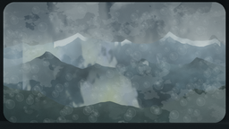
视觉工具实际返回图片 3
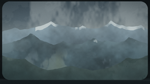
视觉工具实际返回图片 4

视觉工具实际返回图片 5
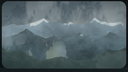
视觉工具实际返回图片 6
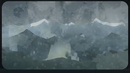
视觉工具实际返回图片 7
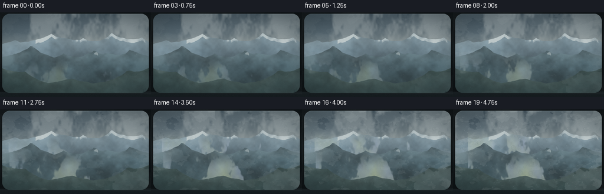
视觉工具实际返回图片 8

视觉工具实际返回图片 9
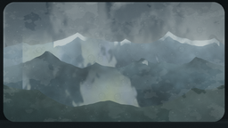
视觉工具实际返回图片 10
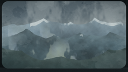
视觉工具实际返回图片 11
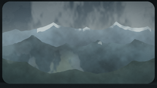
视觉工具实际返回图片 12
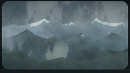
视觉工具实际返回图片 13

保存候选 5 份；完成命令 17 次；可验证图片返回 13 张。原始 API 响应与完整日志保留在本地。